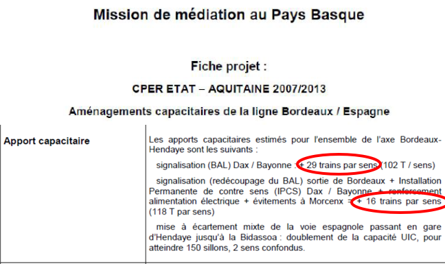

Peut-on augmenter la vitesse et la capacité sur les lignes classiques ?
Ce qu'ils disent :
Pour la ligne Bordeaux-Hendaye, un relèvement de vitesse à 220 km/h sur la ligne existante permet d’obtenir jusqu’à Dax un gain proche de celui du projet de lignes nouvelles (gain de 15 minutes pour les scénarios de modernisation, contre 20 minutes pour une ligne nouvelle).
Mais les enjeux de la capacité de l’axe doivent aussi être pris en compte, notamment dans la perspective du développement des trafics transpyrénéens de marchandises.
Vérifions les faits.
-
Enfin, la Région Nouvelle Aquitaine après l’avoir nié pendant des années, reconnaît qu’une ligne rénovée entre Bordeaux et Dax permet d’obtenir des gains de temps analogue à la LGV.
La migration de 160 km/h à 220km/h nécessite la suppression des passages à niveau. La quasi-totalité des travaux d’aménagement de la ligne ont été réalisés ou en voie de l’être.
Pour justifier la construction de la ligne nouvelle tous les prétextes sont bons à prendre même s’ils sont fallacieux : - Capacité insuffisante de la ligne pour faire accueillir des trains circulant à des vitesses différentes ; - Nécessité de libérer des sillons pour le fret ferroviaire ; - Coût prohibitif des aménagements de la ligne qui reviendrait aussi, si ce n’est plus cher que la construction d’une LGV.
-
Capacité insuffisante de la ligne : nous avons vu qu'elle était de 264 trains (132 par sens) en sortie de Bordeaux (Source : Réseau Ferré de France) et qu'il circulait actuellement 100 trains, 50 par sens.(Source : Atlas du réseau ferré en France Edition 2023. SNCF Réseau, pages 42 et suivantes). En outre cette capacité peut être améliorée par des aménagements mineurs (expertise SMA+ Progtrans, RFF) et la mise en place du système de signalisation ERTMS préconisé par l’Europe.
Source : document RFF
Nécessité de libérer des sillons pour le fret ferroviaire.
Sur le tronçon Dax-Bordeaux-Dax tous les trains de fret devront emprunter la ligne existante vers Bordeaux, car ils ne peuvent circuler sur la LGV.
Où est la « libération de nouvelles capacités » sinon les sillons cédés par les quelques TGV qui n’emprunteront plus la ligne actuelle ?
-
Coût prohibitif des aménagements de la ligne existante
Nous avons vu qu’il n’en était rien (voir question/réponse « Gagnerait-on le même temps en modernisant les voies existantes ?)